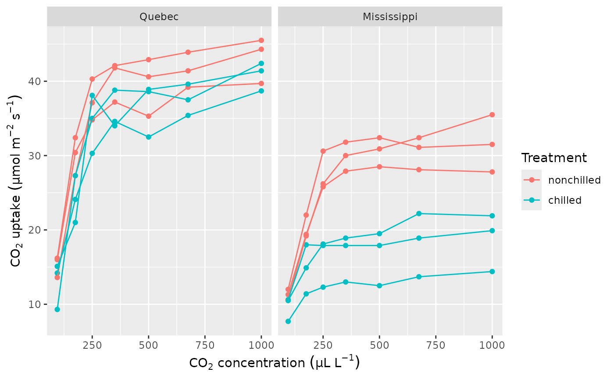
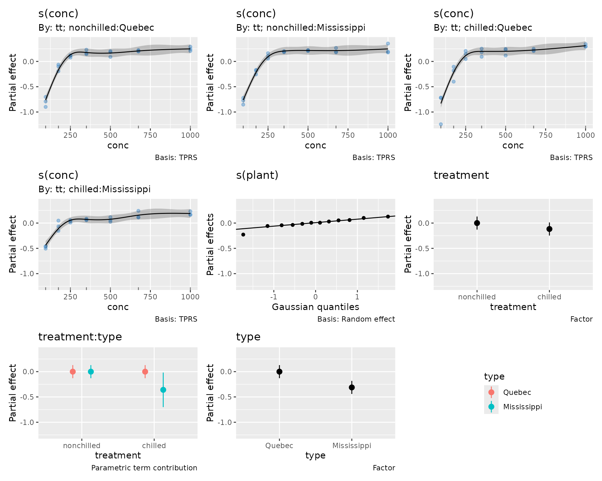
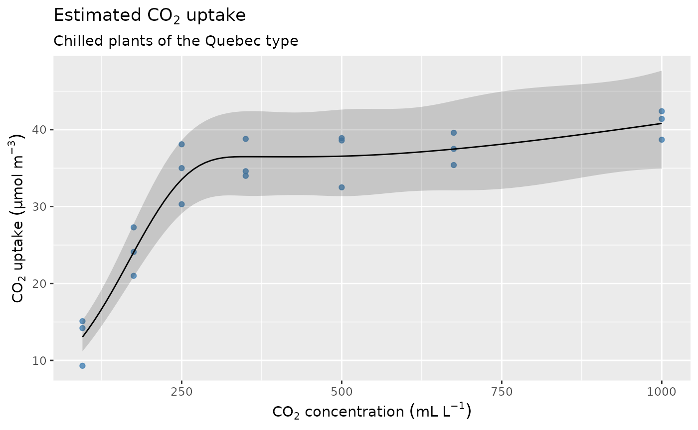
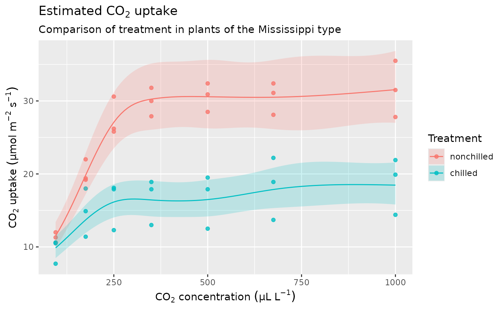
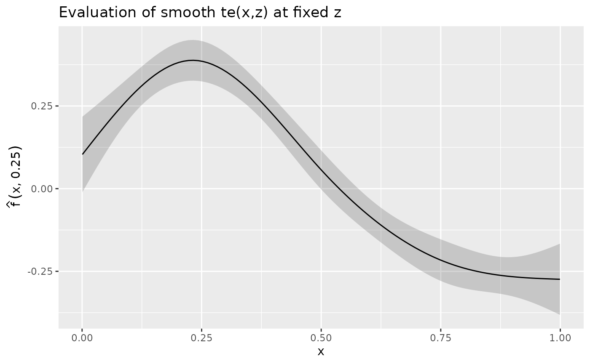
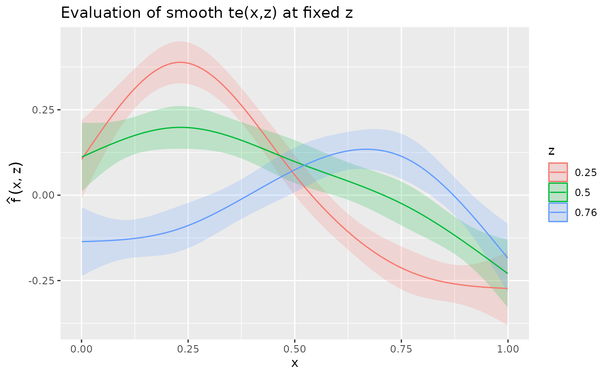
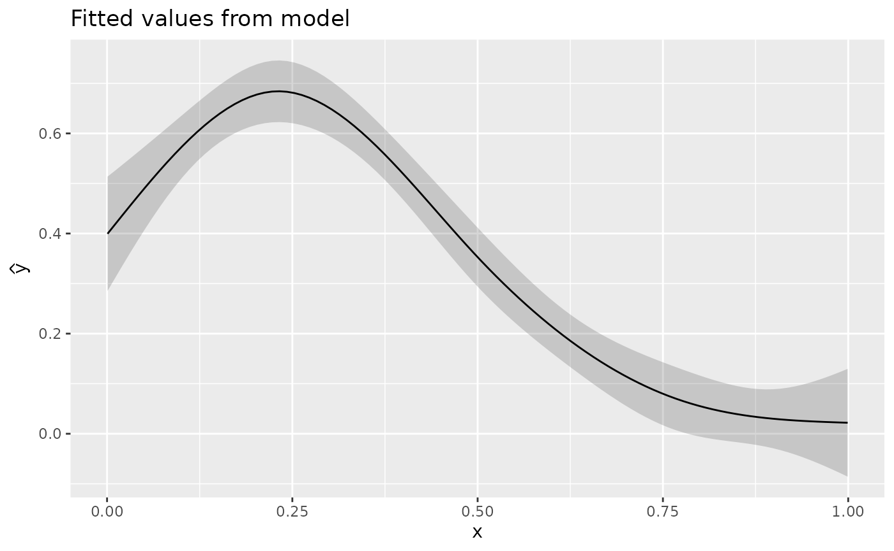
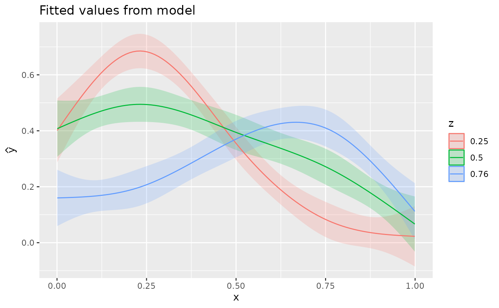

Creating prediction grids with data_slice()
Source:vignettes/articles/data-slices.Rmd
data-slices.RmdA prediction curve needs a set of covariate values at which to
evaluate the model. For example, to plot a treatment group’s response to
concentration, we vary concentration and hold the treatment and other
covariates fixed. data_slice() creates this prediction
grid, called a data slice, from a fitted model or a data
frame.
This article builds grids for treatment comparisons and for curves through a two-dimensional smooth. We load {gratia} for prediction grids, {mgcv} for model fitting, {dplyr} and {forcats} for data preparation, and {ggplot2} for plotting.
library("gratia")
library("mgcv")
#> Loading required package: nlme
#> This is mgcv 1.9-4. For overview type '?mgcv'.
library("dplyr")
#>
#> Attaching package: 'dplyr'
#> The following object is masked from 'package:nlme':
#>
#> collapse
#> The following objects are masked from 'package:stats':
#>
#> filter, lag
#> The following objects are masked from 'package:base':
#>
#> intersect, setdiff, setequal, union
library("ggplot2")
library("forcats")
library("datasets")Predict uptake for selected plant groups
The CO2 data from {datasets} record uptake at seven
carbon dioxide concentrations for each of twelve grass plants from
Quebec and Mississippi. The plants received either a chilled or
nonchilled treatment. We rename the grouping variables and make the
plant identifier an unordered factor for modelling.
## data load and prep
data(CO2, package = "datasets")
plant <- CO2 |>
as_tibble() |>
rename(plant = Plant, type = Type, treatment = Treatment) |>
mutate(plant = factor(plant, ordered = FALSE))Plot the measurements by origin and treatment to see the curves we want to predict. Uptake is measured in micromoles per square metre per second and concentration in microlitres per litre (\mu\mathrm{L}\,\mathrm{L}^{-1}). See Table 1 in the original study.
plant_ylab <- expression(CO[2] ~ uptake ~ (mu * mol ~ m^{-2} ~ s^{-1}))
plant_xlab <- expression(CO[2] ~ concentration ~ (mu * L ~ L^{-1}))
plant |>
ggplot(
aes(x = conc, y = uptake, group = plant, colour = treatment)
) +
geom_point() +
geom_line() +
facet_wrap(~type) +
labs(y = plant_ylab, x = plant_xlab, colour = "Treatment")
Fit a separate concentration smooth for each combination of treatment
and origin. tt identifies those combinations. The plant
random intercept allows each plant to have a different overall uptake
level and accounts for dependence between measurements on the same
plant. The Gamma family models a positive, continuous response, and the
log link keeps the fitted mean positive.
plant <- plant |>
mutate(tt = fct_cross(treatment, type))
m_plant <- gam(
uptake ~ treatment * type + s(conc, by = tt, k = 6) +
s(plant, bs = "re"),
data = plant, method = "REML", family = Gamma(link = "log")
)
overview(m_plant)
#>
#> Generalized Additive Model with 9 terms
#>
#> term type k edf ref.edf statistic p.value
#> <chr> <chr> <dbl> <dbl> <dbl> <dbl> <chr>
#> 1 Intercept parame… NA 1 1 53.4 < 0.001
#> 2 treatmentchilled parame… NA 1 1 -1.26 0.21249
#> 3 typeMississippi parame… NA 1 1 -3.35 0.00148
#> 4 treatmentchilled:typeMississippi parame… NA 1 1 -2.73 0.00855
#> 5 s(conc):ttnonchilled:Quebec TPRS 5 4.72 4.96 69.7 < 0.001
#> 6 s(conc):ttnonchilled:Mississippi TPRS 5 4.62 4.92 74.1 < 0.001
#> 7 s(conc):ttchilled:Quebec TPRS 5 4.71 4.95 86.5 < 0.001
#> 8 s(conc):ttchilled:Mississippi TPRS 5 4.39 4.81 25.3 < 0.001
#> 9 s(plant) Random… 12 7.40 8 12.8 < 0.001Plot the smooth contributions on common scales to compare their shapes. The panels show contributions to the log of mean uptake. Partial residuals add the model’s weighted working residuals to each smooth, making it easier to see where the data depart from the fitted curve. We use {patchwork} to collect the legend in the empty lower-right panel.
draw(
m_plant, residuals = TRUE, scales = "fixed",
ncol = 3, guides = "collect"
) +
patchwork::guide_area()
To predict uptake for chilled Quebec plants, vary conc
over 100 evenly spaced values and fix type and
treatment. Unspecified predictors receive representative
values. First inspect this grid to see what that means for the derived
factor tt.
ds1 <- data_slice(
m_plant,
conc = evenly(conc, n = 100),
type = level(type, "Quebec"),
treatment = level(treatment, "chilled")
)
ds1
#> # A tibble: 100 × 5
#> conc type treatment tt plant
#> <dbl> <fct> <fct> <fct> <fct>
#> 1 95 Quebec chilled nonchilled:Quebec Qn1
#> 2 104. Quebec chilled nonchilled:Quebec Qn1
#> 3 113. Quebec chilled nonchilled:Quebec Qn1
#> 4 122. Quebec chilled nonchilled:Quebec Qn1
#> 5 132. Quebec chilled nonchilled:Quebec Qn1
#> 6 141. Quebec chilled nonchilled:Quebec Qn1
#> 7 150. Quebec chilled nonchilled:Quebec Qn1
#> 8 159. Quebec chilled nonchilled:Quebec Qn1
#> 9 168. Quebec chilled nonchilled:Quebec Qn1
#> 10 177. Quebec chilled nonchilled:Quebec Qn1
#> # ℹ 90 more rowsdata_slice() uses the most common level for an
unspecified factor, with ties resolved by choosing the first tied level.
It treats tt as a separate factor, so supply the level that
matches treatment and type before using this
grid for prediction.
ds1 <- data_slice(
m_plant,
conc = evenly(conc, n = 100),
treatment = level(treatment, "chilled"), type = level(type, "Quebec"),
tt = level(tt, "chilled:Quebec")
)
ds1
#> # A tibble: 100 × 5
#> conc treatment type tt plant
#> <dbl> <fct> <fct> <fct> <fct>
#> 1 95 chilled Quebec chilled:Quebec Qn1
#> 2 104. chilled Quebec chilled:Quebec Qn1
#> 3 113. chilled Quebec chilled:Quebec Qn1
#> 4 122. chilled Quebec chilled:Quebec Qn1
#> 5 132. chilled Quebec chilled:Quebec Qn1
#> 6 141. chilled Quebec chilled:Quebec Qn1
#> 7 150. chilled Quebec chilled:Quebec Qn1
#> 8 159. chilled Quebec chilled:Quebec Qn1
#> 9 168. chilled Quebec chilled:Quebec Qn1
#> 10 177. chilled Quebec chilled:Quebec Qn1
#> # ℹ 90 more rowsPass the grid to fitted_values() for predictions and
credible intervals for mean uptake with the plant random intercept set
to zero.
fv1 <- fitted_values(
m_plant,
data = ds1,
scale = "response",
exclude = "s(plant)"
)
#> Prediction data contain 100 rows with combinations of categorical predictor
#> levels absent from the fitting data.
#> ℹ Factors: `treatment`, `type`, `tt`, and `plant`. Input rows: 1, 2, 3, 4, 5,
#> 6, 7, 8, 9, 10, ....
fv1
#> # A tibble: 100 × 11
#> .row conc treatment type tt plant .parameter .fitted .se .lower_ci
#> <int> <dbl> <fct> <fct> <fct> <fct> <chr> <dbl> <dbl> <dbl>
#> 1 1 95 chilled Quebec chill… Qn1 mean 13.0 0.0783 11.2
#> 2 2 104. chilled Quebec chill… Qn1 mean 14.1 0.0757 12.1
#> 3 3 113. chilled Quebec chill… Qn1 mean 15.2 0.0737 13.1
#> 4 4 122. chilled Quebec chill… Qn1 mean 16.3 0.0722 14.2
#> 5 5 132. chilled Quebec chill… Qn1 mean 17.6 0.0714 15.3
#> 6 6 141. chilled Quebec chill… Qn1 mean 18.9 0.0711 16.4
#> 7 7 150. chilled Quebec chill… Qn1 mean 20.2 0.0712 17.6
#> 8 8 159. chilled Quebec chill… Qn1 mean 21.6 0.0716 18.8
#> 9 9 168. chilled Quebec chill… Qn1 mean 23.0 0.0721 20.0
#> 10 10 177. chilled Quebec chill… Qn1 mean 24.4 0.0726 21.2
#> # ℹ 90 more rows
#> # ℹ 1 more variable: .upper_ci <dbl>exclude removes the random intercept’s contribution even
though the grid contains a plant identifier. With the default
scale = "response", the fitted values and intervals are in
uptake units. With a log link, setting the random intercept to zero
gives a prediction for a plant at that reference level. Averaging over
the distribution of plant effects would give a different mean.
Plot that curve and interval alongside the observed measurements for chilled Quebec plants. The observations include variation between individual plants, while the curve holds the plant-specific intercept at zero.
fv1 |>
ggplot(aes(x = conc, y = .fitted)) +
geom_point(
data = plant |>
filter(type == "Quebec", treatment == "chilled"),
mapping = aes(y = uptake),
alpha = 0.8, colour = "steelblue"
) +
geom_ribbon(
aes(ymin = .lower_ci, ymax = .upper_ci),
alpha = 0.2
) +
geom_line() +
labs(
x = plant_xlab, y = plant_ylab,
title = expression(Estimated ~ CO[2] ~ uptake),
subtitle = "Chilled plants of the Quebec type"
)
Compare treatments on the same concentration grid
To compare treatments for Mississippi plants, request all treatment
levels and one origin. Recreate tt from those values so
that each prediction row selects the appropriate smooth.
ds2 <- data_slice(
m_plant,
conc = evenly(conc, n = 100),
treatment = evenly(treatment),
type = level(type, "Mississippi")
) |>
mutate(
tt = fct_cross(treatment, type, keep_empty = TRUE)
)
ds2
#> # A tibble: 200 × 5
#> conc treatment type tt plant
#> <dbl> <fct> <fct> <fct> <fct>
#> 1 95 nonchilled Mississippi nonchilled:Mississippi Qn1
#> 2 95 chilled Mississippi chilled:Mississippi Qn1
#> 3 104. nonchilled Mississippi nonchilled:Mississippi Qn1
#> 4 104. chilled Mississippi chilled:Mississippi Qn1
#> 5 113. nonchilled Mississippi nonchilled:Mississippi Qn1
#> 6 113. chilled Mississippi chilled:Mississippi Qn1
#> 7 122. nonchilled Mississippi nonchilled:Mississippi Qn1
#> 8 122. chilled Mississippi chilled:Mississippi Qn1
#> 9 132. nonchilled Mississippi nonchilled:Mississippi Qn1
#> 10 132. chilled Mississippi chilled:Mississippi Qn1
#> # ℹ 190 more rowsfct_cross() replaces the automatically chosen
tt value with the correct treatment-origin combination.
keep_empty = TRUE retains the factor levels used when
fitting, including combinations absent from this prediction grid.
Predict both treatment curves with the plant-specific intercept set to zero, then overlay the measurements for Mississippi plants.
fitted_values(
m_plant,
data = ds2, scale = "response",
exclude = "s(plant)"
) |>
ggplot(
aes(x = conc, y = .fitted, group = treatment)
) +
geom_point(
data = plant |> filter(type == "Mississippi"),
mapping = aes(y = uptake, colour = treatment),
alpha = 0.8
) +
geom_ribbon(
aes(ymin = .lower_ci, ymax = .upper_ci, fill = treatment),
alpha = 0.2
) +
geom_line(
aes(colour = treatment)
) +
labs(
x = plant_xlab,
y = plant_ylab,
title = expression(Estimated ~ CO[2] ~ uptake),
subtitle = "Comparison of treatment in plants of the Mississippi type",
colour = "Treatment",
fill = "Treatment"
)
#> Prediction data contain 200 rows with combinations of categorical predictor
#> levels absent from the fitting data.
#> ℹ Factors: `treatment`, `type`, `tt`, and `plant`. Input rows: 1, 2, 3, 4, 5,
#> 6, 7, 8, 9, 10, ....
Choose values for a prediction grid
Use these helpers to select numeric values or factor levels for a grid.
-
evenly(x, n = 100)returns 100 evenly spaced values from the minimum to the maximum ofx. -
evenly(x, by = 5)takes steps of 5 from the minimum ofxup to its maximum. - Supply
lower,upperor both to use different bounds, as inevenly(x, n = 100, lower = 5, upper = 10). -
evenly(fct)andall_levels(fct)return each level offctonce. -
ref_level(fct)returns the first level offct. For an unordered factor, this is the reference under R’s default contrasts. -
level(fct, "B")returns the requested level"B".
Factor helpers preserve the levels used in the fitted model, so a prediction grid uses the same coding as the fitting data.
data_slice() also accepts named R expressions, evaluated
using variables from the fitted model’s data or from supplied
data. Here we select the lower quartile, median and upper
quartile of concentration. Other covariates retain their representative
values.
data_slice(
m_plant,
conc = quantile(conc, probs = c(0.25, 0.5, 0.75))
)
#> # A tibble: 3 × 5
#> conc treatment type tt plant
#> <dbl> <fct> <fct> <fct> <fct>
#> 1 175 nonchilled Quebec nonchilled:Quebec Qn1
#> 2 350 nonchilled Quebec nonchilled:Quebec Qn1
#> 3 675 nonchilled Quebec nonchilled:Quebec Qn1When several variables have multiple requested values, the grid contains every combination of those values.
Keep prediction ranges within each group
When a covariate has a different observed range in each group, a grid
spanning the full range can lead to extrapolation for some groups. Use
.by to evaluate expressions separately within each observed
group. Here the range of x differs between groups A and
B.
group_data <- data.frame(
x = c(0, 4, 10, 5, 12, 20),
fac = factor(rep(c("A", "B"), each = 3)),
z = c(1, 2, 3, 7, 8, 9)
)
data_slice(
group_data,
x = evenly(x, n = 5),
.by = fac
)
#> # A tibble: 10 × 3
#> x fac z
#> <dbl> <fct> <dbl>
#> 1 0 A 3
#> 2 2.5 A 3
#> 3 5 A 3
#> 4 7.5 A 3
#> 5 10 A 3
#> 6 5 B 3
#> 7 8.75 B 3
#> 8 12.5 B 3
#> 9 16.2 B 3
#> 10 20 B 3This generates five values from 0 to 10 for A, and five from 5 to 20
for B. The same syntax works for a fitted GAM containing
s(x, by = fac). Grouping variables are included
automatically, and only observed groups are used. Select multiple
grouping variables with .by = c(site, treatment) to work
within their observed combinations.
Use fac = level(fac, "B") to create a grid for B alone.
With .by = fac, data_slice() selects B before
evaluating evenly(x, n = 5), so it uses that group’s range
of 5 to 20.
data_slice(group_data,
x = evenly(x, n = 5), fac = level(fac, "B"), .by = fac
)
#> # A tibble: 5 × 3
#> x fac z
#> <dbl> <fct> <dbl>
#> 1 5 B 3
#> 2 8.75 B 3
#> 3 12.5 B 3
#> 4 16.2 B 3
#> 5 20 B 3Unspecified covariates, such as z above, keep their
overall representative values. To use group-specific values, supply an
expression explicitly:
data_slice(group_data, x = evenly(x, n = 5), z = mean(z), .by = fac)
#> # A tibble: 10 × 3
#> x z fac
#> <dbl> <dbl> <fct>
#> 1 0 2 A
#> 2 2.5 2 A
#> 3 5 2 A
#> 4 7.5 2 A
#> 5 10 2 A
#> 6 5 8 B
#> 7 8.75 8 B
#> 8 12.5 8 B
#> 9 16.2 8 B
#> 10 20 8 BThe returned tibble is ungrouped and preserves the original factor levels and their ordered status.
With several continuous predictors, a combination can be unobserved
even when each value is within its group’s range. Set
.observed_only = TRUE to retain only combinations of the
specified covariates that occur in the data. This also removes
interpolated points, so leave it off to draw a continuous curve and
check that the chosen grid is supported by observations.
Plot curves through a two-dimensional smooth
For a surface depending on x and z, we can
plot how the smooth changes with x at selected values of
z. We simulate a mean surface with two peaks and sample
x and z independently and uniformly between
zero and one. The response adds independent Gaussian noise of standard
deviation 0.25.
# simulate data from the bivariate surface
df <- data_sim("eg2", n = 1000, scale = 0.25, seed = 2)Fit a tensor product smooth to estimate the surface. We will then
evaluate it along x at selected values of
z.
We will use the same grids to compare smooth contributions from
smooth_estimates() with full fitted means from
fitted_values().
Using smooth_estimates()
Create a grid over x with z fixed at its
lower quartile. The axis label records that fixed value so the resulting
curve is easy to identify.
ds3 <- data_slice(m_biv,
x = evenly(x, n = 100),
z = quantile(z, probs = 0.25)
)
z_val <- with(ds3, round(quantile(z, probs = 0.25), 2))
ylab <- bquote(hat(f)(x, .(z_val)))Evaluate the smooth on the grid and add pointwise credible intervals.
sm <- smooth_estimates(m_biv, select = "te(x,z)", data = ds3) |>
add_confint()
sm
#> # A tibble: 100 × 9
#> .smooth .type .by .estimate .se x z .lower_ci .upper_ci
#> <chr> <chr> <chr> <dbl> <dbl> <dbl> <dbl> <dbl> <dbl>
#> 1 te(x,z) Tensor prod… NA 0.103 0.0583 6.63e-4 0.245 -0.0107 0.218
#> 2 te(x,z) Tensor prod… NA 0.122 0.0548 1.08e-2 0.245 0.0148 0.230
#> 3 te(x,z) Tensor prod… NA 0.141 0.0514 2.08e-2 0.245 0.0400 0.242
#> 4 te(x,z) Tensor prod… NA 0.159 0.0482 3.09e-2 0.245 0.0648 0.254
#> 5 te(x,z) Tensor prod… NA 0.177 0.0451 4.10e-2 0.245 0.0890 0.266
#> 6 te(x,z) Tensor prod… NA 0.195 0.0422 5.11e-2 0.245 0.113 0.278
#> 7 te(x,z) Tensor prod… NA 0.213 0.0396 6.12e-2 0.245 0.135 0.291
#> 8 te(x,z) Tensor prod… NA 0.230 0.0372 7.13e-2 0.245 0.157 0.303
#> 9 te(x,z) Tensor prod… NA 0.247 0.0351 8.14e-2 0.245 0.178 0.316
#> 10 te(x,z) Tensor prod… NA 0.263 0.0333 9.14e-2 0.245 0.198 0.328
#> # ℹ 90 more rowsUse ggplot2 to plot the estimated curve and its intervals.
sm |>
ggplot(aes(x = x, y = .estimate)) +
geom_ribbon(aes(ymin = .lower_ci, ymax = .upper_ci), alpha = 0.2) +
geom_line() +
labs(
title = "Evaluation of smooth te(x,z) at fixed z",
y = ylab
)
With overall_uncertainty = TRUE, the default, the
interval includes uncertainty in the intercept even though the plotted
estimate is the centred smooth contribution. Set
overall_uncertainty = FALSE to base the interval only on
uncertainty in the smooth’s coefficients.
To compare curves at low, middle and high values of z,
request its lower quartile, median and upper quartile. Each value gets a
separate colour and interval ribbon.
ds4 <- data_slice(m_biv,
x = evenly(x, n = 100),
z = round(quantile(z, probs = c(0.25, 0.5, 0.75)), 2)
)
sm <- smooth_estimates(m_biv, select = "te(x,z)", data = ds4) |>
add_confint() |>
mutate(fz = factor(z))
sm |>
ggplot(aes(x = x, y = .estimate, colour = fz, group = fz)) +
geom_ribbon(aes(ymin = .lower_ci, ymax = .upper_ci, fill = fz, colour = NULL),
alpha = 0.2
) +
geom_line() +
labs(
title = "Evaluation of smooth te(x,z) at fixed z",
y = expression(hat(f)(x, z)), colour = "z", fill = "z"
)
Using fitted_values()
fitted_values() evaluates the full model on the grid.
For this Gaussian identity-link model, the fitted mean at each row is
the intercept plus the smooth contribution. The interval quantifies
uncertainty in that mean.
We first plot the fitted mean over x at the single fixed
value of z.
fitted_values(m_biv, data = ds3) |>
ggplot(aes(x = x, y = .fitted)) +
geom_ribbon(aes(ymin = .lower_ci, ymax = .upper_ci), alpha = 0.2) +
geom_line() +
labs(
title = "Fitted values from model",
y = expression(hat(y))
)
We then plot the fitted mean at each of the three fixed values of
z.
fitted_values(m_biv, data = ds4) |>
mutate(fz = factor(z)) |>
ggplot(aes(x = x, y = .fitted, colour = fz, group = fz)) +
geom_ribbon(aes(ymin = .lower_ci, ymax = .upper_ci, fill = fz, colour = NULL),
alpha = 0.2
) +
geom_line() +
labs(
title = "Fitted values from model",
y = expression(hat(y)), colour = "z", fill = "z"
)